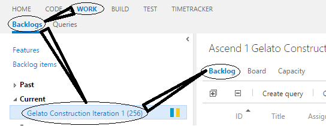
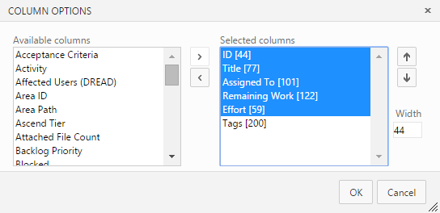

You should navigate to tab 'Work' and go to 'Backlogs' tab within this one. Select your iteration and display it's WorkItems in 'Backlog' view.

Then you should configure your table next way: shown fields are obligtory and have to be included in the same order as on the image below except 'Tags' field which can be set to any position further of 5th.

When ready select which type of cards you wish to get and press 'Print' button.